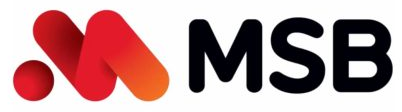
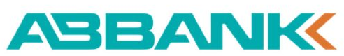

Các hình thức thanh toán
Quý khách chọn kênh thanh toán thuận tiện nhất — ưu tiên chuyển khoản hoặc thanh toán qua app để không phải đến quầy giao dịch.
1. Chuyển khoản ngân hàng


Trích nợ tự động
Đăng ký dịch vụ trích nợ tự động qua app ngân hàng hoặc tại quầy giao dịch của ngân hàng. Đến kỳ thu tiền nước, ngân hàng tự động trừ vào tài khoản theo đúng số tiền trên hoá đơn — không cần thao tác lại mỗi tháng.
Thanh toán qua app ngân hàng
- 1
Đăng nhập app ngân hàng
Dùng app ngân hàng quý khách đang sử dụng.
- 2
Chọn thanh toán hoá đơn
Tìm mục thanh toán hoá đơn / dịch vụ tiện ích, chọn nhà cung cấp NAWARUCO. [cần xác nhận tên hiển thị NAWARUCO trên các app ngân hàng]
- 3
Nhập mã khách hàng
Nhập đúng mã khách hàng in trên hoá đơn để hệ thống tra ra đúng số tiền cần thanh toán.
- 4
Xác thực OTP
Nhập mã OTP để hoàn tất — hệ thống gửi biên nhận điện tử ngay sau khi giao dịch thành công.
Chuyển khoản trực tiếp
Chuyển khoản đến tài khoản của NAWARUCO — số tài khoản [cần số tài khoản], ngân hàng [cần tên ngân hàng], chủ tài khoản [cần tên chủ tài khoản]. Nội dung chuyển khoản bắt buộc ghi rõ mã khách hàng và kỳ hoá đơn (ví dụ: NW-018842 T09/2026) để kế toán đối soát đúng người, đúng kỳ.
2. Qua các kênh trung gian
MoMo
Ví điện tử MoMo — mục Thanh toán hoá đơn, tìm NAWARUCO.
Payoo
Qua app Payoo hoặc website. [cần đường dẫn]
VNPay
Qua app VNPay hoặc quét mã VNPay in trên hoá đơn.
Viettel Money
Dành cho thuê bao Viettel, thanh toán qua BankPlus. [cần xác nhận]
3. Quét mã QR trên hoá đơn
Mã QR có hiệu lực trong vòng 30 ngày kể từ ngày in hoá đơn. Không tự sửa số tiền hoặc nội dung khi quét — hệ thống đã điền sẵn đúng theo hoá đơn.
4. Nộp trực tiếp tại các điểm thu
Chuỗi cửa hàng tiện lợi liên kết
[cần xác nhận danh sách đối tác — ví dụ Winmart, FamilyMart, Circle K... nếu NAWARUCO có hợp tác]
Trụ sở công ty
[cần địa chỉ trụ sở chính], trong giờ làm việc.
Các trạm cấp nước theo khu vực
[cần danh sách địa chỉ trạm cấp nước theo từng xã/huyện phục vụ]
Lưu ý khi thanh toán
- Cung cấp đúng mã khách hàng hoặc mang theo thông báo hoá đơn nước để được xử lý chính xác.
- Sau khi thanh toán thành công, hoá đơn điện tử được gửi qua website hoặc app — quý khách nên lưu lại làm bằng chứng.
- Kiểm tra lại trạng thái thanh toán trước khi nộp lại lần nữa để tránh nộp trùng.
Xem thêm trách nhiệm người thanh toán và biểu giá nước hiện hành.